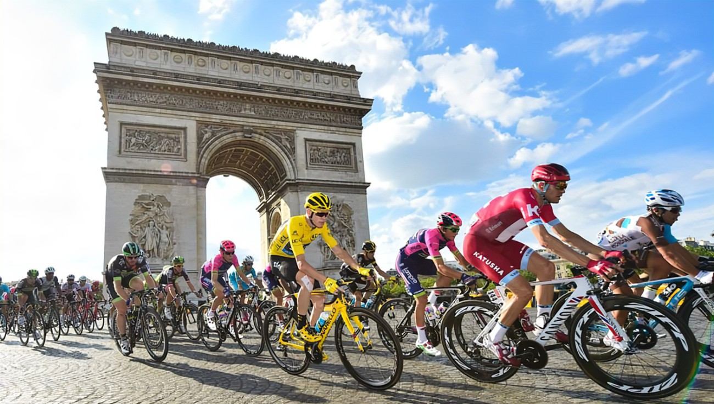

Történelem(Tour De France)
Az első Tour de France-ra hatvanan jelentkeztek, a teljes útvonal összesen 2428 kilométer hosszú volt. A győztes Maurice Garin lett, aki 25km/h átlagsebességgel teljesítette a távot. Bár 100 év alatt a verseny és a kerékpárok is rengeteget fejlődtek, Garin máig tartja a Tour de France egyik rekordját. Maurice Garin nyerte a Tourt a valaha volt legnagyobb különbséggel a második helyezett előtt, aki 2 óra 47 perccel később érkezett be utána a célba.

Jelen korszaka
A jelenkori kerékpáros sport rendkívül sokoldalú, dinamikusan fejlődő és széleskörű érdeklődést vonzó tevékenység. Az utóbbi évtizedekben jelentős technológiai és versenyformákbeli változásokon ment keresztül, amely lehetővé tette, hogy a sportág globálisan is még szélesebb közönséget érjen el. A kerékpáros sport ma már több ágra bontható, mindegyik sajátos jellegzetességekkel és kihívásokkal rendelkezik.
Versenyek az idei évben(2025)
2025-ben megrendezésre kerülő versenyeket az alábbi oldalon lehet követni: https://www.eurosport.hu/kerekpar/calendar-result.shtml
Ezek a háromhetes versenyek a világ legfontosabb eseményei közé tartoznak, és a kerékpársport csúcsát jelentik, ahol a legjobb versenyzők mérhetik össze tudásukat.
- Giro d’Italia (Olaszország)
- Dátum: 2025. május 9. – 31.
- Leírás: A Giro d’Italia az egyik legnagyobb és legrangosabb háromhetes verseny, amelyet Olaszországban rendeznek. A verseny szakaszai rendkívül változatosak, a hegyi és sík szakaszok egyaránt fontos szerepet kapnak.
- Tour de France (Franciaország)
- Dátum: 2025. július 5. – 27.
- Leírás: A Tour de France a világ leghíresebb kerékpárversenye, amely a legjobb versenyzők számára kihívást jelentő hegyi, sík és időfutam szakaszokat tartalmaz. A versenyt Franciaországban rendezik, de néhány szakasz külföldre is átnyúlik.
- Vuelta a España (Spanyolország)
- Dátum: 2025. augusztus 23. – szeptember 14.
- Leírás: A Vuelta a España Spanyolország legfontosabb kerékpáros eseménye. A verseny szakaszai általában hegyvidéki területeken zajlanak, így rendkívül megterhelő a versenyzők számára.